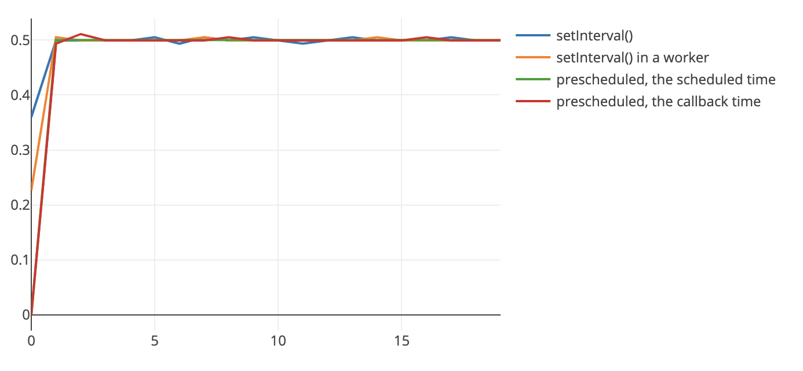
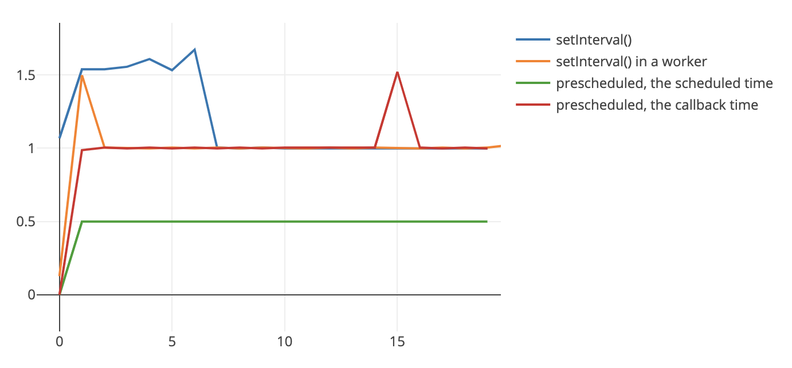
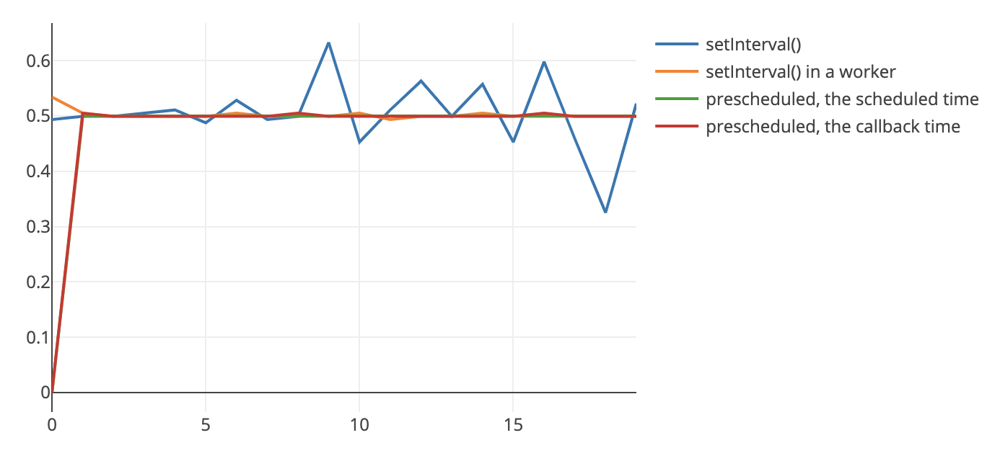
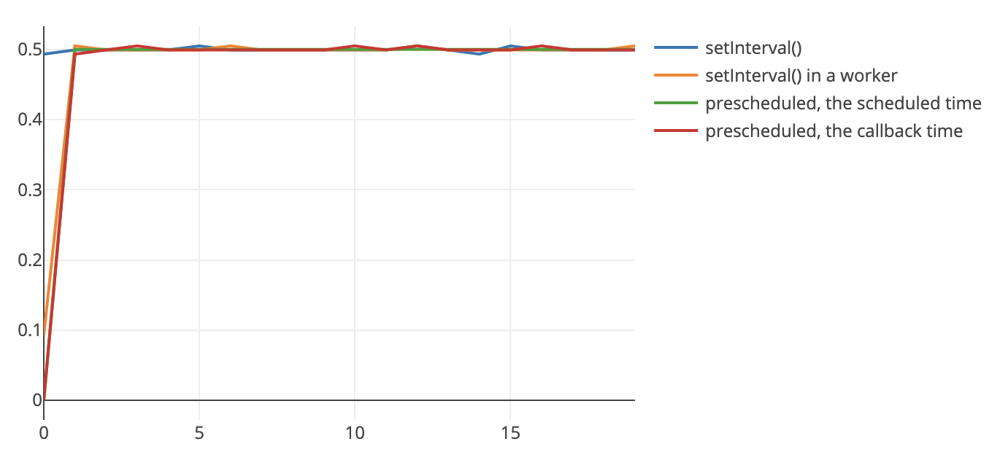

My job nowadays involves a lot of music and JavaScript. You know what musicians really care about? Paychecks (support your local musicians, go to concerts, don’t steal music from indie musicians). But also: keeping time.
Keeping time in JavaScript is kind of a joke, not just because time is a social construct (this is the Jenn Schiffer social engineering at work), but because it’s really easy to write code that blocks the timekeeper. Remember: JavaScript inherently only has one thread, which it uses for everything: painting your buttons, looping through arrays, mining bitcoin, scrolling. Everything. This means that most of the time, you write blocking code, but it only blocks for a little bit – 1ms here and there. And that’s ok! Visually you don’t notice that kind of latency, and let’s be honest: it takes like 400ms to download the scripts, what’s 1ms?
1ms starts getting in the way when it’s actually 5ms, or 40 ms, or when you’re trying to have a metronome run correctly. I made a typing delay experiment to see how much delay people could tolerate, and just for typing alone some people got really antsy around 200ms (shout out to the section of the population who thought they were heroes because they could tolerate infinity delay because of how bad ssh latency is. That’s not heroic, that’s Stockholm syndrome. Complain to your sys admins).
When I changed that to an audio delay experiment, musicians started complaining around 40ms. And that was just audio delay, not an actual metronome. Imagine that fucking with your audio too! So, keeping time is really important – but how do we actually do that in JavaScript?
In general, when we want to not block in JavaScript (and do better than
setInterval, who is the friend you invite to a party but
shows up like +/- 4h to it), we do one of two things:
start writing async functions, or move code to a Worker (Surma
has a great article about workers everyone
should read). In
particular, for audio things, there’s a third option: using the Web Audio clock – Chris Wilson has a great blog post
about how to do your own audio scheduling which is an oldie but a goodie! (turns out
not much changes in 4 years in the Web Audio spec world). Anyway, I wanted to
compare these three approaches, and see how bad the latency was.
Play with the experiment
Me being me, I made a whole demo to test and compare these approaches. I built 3 kinds of metronomes:
- a really bad one using
setIntervalon the main thread, - a less bad one using
setIntervalin a Worker, - the best one, that uses the Web Audio API to preschedule audio events, at
the times you want (labelled “prescheduled” in the graphs). The audio events
will happen precisely at the time they are scheduled, but if you want a
callback to do some visual work on, that callback needs to be in a
setTimeout, and will happen when it happens. This is why there are two lines for this metronome.
You can run them on your own in that Glitch, but if you only want the results, here they are.
Results
Setup
There are 3 metronomes, that each tick 20 times, and after each tick, a callback
function is called. For the first 2 metronomes, in this callback you also
make the audio tick (except for the Web Audio scheduler metronome, which makes the audio
tick on its own time). The graphs below log the difference between the audioContext.currentTime
of successive ticks.
🤔 The unrealistic case
This is when you’re literally doing 0 work in between the clock ticks. This is probably never going to happen in a real app unless it’s … just an actual metronome i guess. In this case, the difference between successive ticks looks ok for all metronomes – I mean, why wouldn’t it be? You’re not scrolling, you’re not doing any work, what’s there to block the ticks? There’s still a bit of variance between each ticks, but that’s because we know we can’t schedule anything (except for the Web Audio clock) to be exactly 0.5s away.

🤢 The awful case
Here we are doing 0.5 seconds of fake work on the main thread, after each tick. This
is where things get really dodgy. Because that fake work is blocking, that means that all
the metronome callbacks are kind of screwed, and their ticks are delayed by at least 0.5s.
In the second metronome, even though we’re calling setInterval() in a Worker, it makes no difference because the work from the previous tick is blocking, so it automatically delays the next tick.
In the Web Audio case, we can hear the ticks correctly (the green line), but the callback (which you would use to display things to the screen), is delayed for the same reason
as the other metronomes. Friends don’t let friends do work on the main thread.

😰 The better, but still not great case
When we have a big chunk of blocking work, a good approach is to chunk it up in
smaller work. There are several ways to do this. I split each 0.5s of work into smaller
5ms chunks, and then do each of them in a requestAnimationFrame. This is ok,
but a bit wasteful (it makes your work take longer than necessary). A better
approach is to use tasks (see this sample code from the proxx game),
but the results weren’t going to be that different in this case, so I didn’t bother.
Anyway, this experiment looks better!
Now our ticks are only delayed by about 5ms, which might be ok for your use case. The bad main
thread setInterval metronome is still doing poorly because there’s still
work on the main thread and it keeps time on the main thread, so time is still
wibbly wobbly in this case.

🤩 The optimal case
All workers all the time! If you can, do all this expensive work in a Worker! If we move the work we have to do in the callback completely off the main thread, then this setup basically looks the same as the unrealistic “there’s no work being done ever” case – the key distinction is that it’s really “there’s no work being done on the main thread ever. Hurray!

What have I learned from this
- time is hard
- I knew
setInterval()is bad for time keeping, but now I know it’s like … really bad - if you need audio scheduling, use the Web Audio clock
- if you need accurate scheduling without the Web Audio clock, use
setIntervalin a Worker - and if you can, move any expensive work that you have to do from the main thread to a Worker.
Hope this helps at least one of you!
Thanks to Surma for proof reading this and letting me steal his horrific “block for a fixed time” sample code (it’s this. I know you want to look).